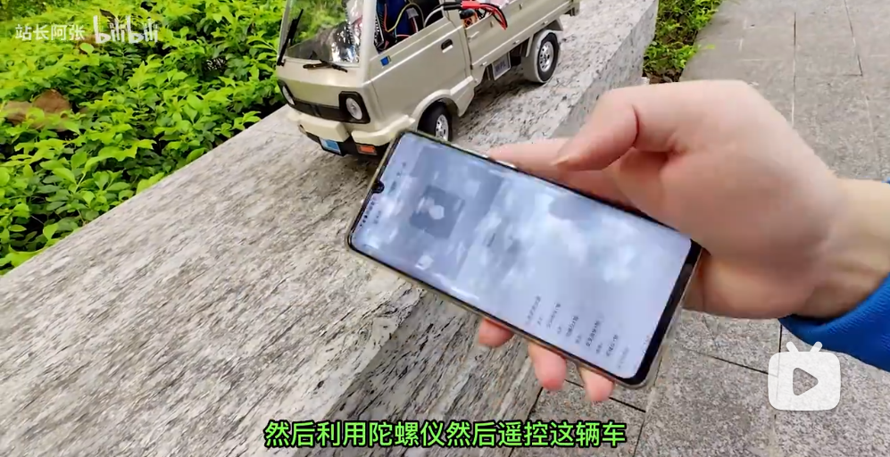

跟清逸折腾硬件之第四版本 手机网页控制esp32接收端 (http request，Arduino IDE)

这个是第四个版本，使用手机连接esp32的热点模式，使用手机网页发送http请求到esp32。esp32接收端接收到信号包，转换成pwm控制信号，分别控制舵机和电调控制小车。
【手机网页，陀螺仪，遥控，比想象中容易实现】 https://www.bilibili.com/video/BV1w84y1M7e9/?share\_source=copy\_web&vd\_source=dda83490bf489caf98403d3f28833535

可参考以前的物料清单
只需要下面这个清单中的
ESP32开发板，有刷电调，2S电池。

Web遥控器地址
网页遥控地址： ../../web-rc/v1
手机可直接扫码，用微信，浏览器都行
（这个网页暂时不支持离线，记得在连接esp32的热点之前，先打开这个网页，不然连接完Esp32的之后会打不开。我后续会给网页加上Service Worker的能力，让这个网页支持离线打开。）
使用手机打开，目前只处理成支持touch的事件+陀螺仪的事件。（陀螺仪遥控要稍微练习和适应一下，刚开始玩会有点不适应）
Esp32开启热点，默认自身的ip是192.168.4.1
实际使用过程中如果ip有变化，可自行调整。
接线方式
车子端，接收端
电调连接电源（以物料单中的有刷电调为例）(此处可参考第一版本视频中的接法)
● 两黑两红的外侧黑线 接 2S电池(7.4v)的负极
● 两黑两红的外侧红线 接 2S电池(7.4v)的正极
电调连接电机（以物料单中的有刷电调为例）(此处可参考第一版本视频中的接法)
● 中间的窄JST接口黑线 接 电机红线
● 中间的窄JST接口红线 接 电机 黑线
(如果行驶方向相反，可以把这两根线交换连接)
esp32 连接电调
● esp32 VIN 连接 电调三pin排线的红线
● esp32 GND(VIN旁) 连接 电调三pin线的黑线
● 电调3pin线的白线(信号线) 连接 esp32的 D22(半功率)或者D23(满功率)
esp32 连接转向舵机
● 转向舵机3pin线的红色线 连接 esp32的 3V3
● 转向舵机3pin线的棕色线 连接 esp32的 GND(3V3旁)
● 转向舵机3pin线的黄色线 连接 esp32的 D25(半角度) 或者 D26(满角度)
代码
接收端（Esp32 ）
可修改中间部分代码
#include <WiFi.h>
#include <WiFiClient.h>
#include <WebServer.h>
#include <ESPmDNS.h>
#include <stdio.h>
/**
* 舵机控制相关
*/
class LedcServo {
public:
float freq = 50;
int resolution = 8;
float pwmBaseScale;
float pwmMin;
float pwmMax;
int channel;
int scale = 1;
void setup(float freq, int resolution, int channel);
/* 0 < scale <= 1 */
void setScale(float scale);
void attachPin(int pin);
void write(float value, float min, float max);
};
void LedcServo:: setup(float f, int r, int c) {
this->freq = f;
this->resolution = r;
this->pwmBaseScale = this->freq * pow(2, this->resolution) / 1000;
this->pwmMin = 1 * this->pwmBaseScale;
this->pwmMax = 2 * this->pwmBaseScale;
this->channel = c;
ledcSetup(this->channel, this->freq, this->resolution);
}
void LedcServo:: setScale(float s) {
if (s <= 0) throw "s 不能小于等于0";
if (s > 1) throw "s 不能大于1";
this->scale = s;
this->pwmMin = (1.5 - s * 0.5) * this->pwmBaseScale;
this->pwmMax = (1.5 + s * 0.5) * this->pwmBaseScale;
}
void LedcServo:: attachPin(int p) {
ledcAttachPin(p, this->channel);
}
void LedcServo:: write(float v, float min, float max) {
float newV = v;
if (max > min) {
if (v > max) newV = max;
if (v < min) newV = min;
} else {
if (v > min) newV = min;
if (v < max) newV = max;
}
ledcWrite(this->channel, map(newV, min, max, this->pwmMin, this->pwmMax));
}
float sendMin = -100;
float sendMax = 100;
float sendHaf = 0;
float rxC1 = sendHaf;
float rxC2 = sendHaf;
// 设置为-1
float lastRxC1 = rxC1;
float lastRxC2 = rxC2;
LedcServo rxC1Servo;
LedcServo rxC1ServoHaf;
LedcServo rxC2Servo;
LedcServo rxC2ServoHaf;
/**
* 接收信息的web server 监听80端口
*/
WebServer server(80);
unsigned long timeNow = 0;
unsigned long lastDataTickTime = 0;
int LED_BUILTIN = 2;
bool ledShow = false;
int ledLoopTick = -1;
void handleRoot() {
String c = server.arg("c");
// Serial.println(c.c_str());
sscanf(c.c_str(), "c:%f,%f", &rxC1, &rxC2);
// Serial.println(rxC1);
// Serial.println(rxC2);
lastDataTickTime = millis();
server.send(200, "text/plain", "success");
}
void registerEvent() {
server.on("/", handleRoot);
server.enableCORS();
server.begin();
Serial.println("HTTP server started");
}
void setup() {
Serial.begin(9600);
pinMode(LED_BUILTIN, OUTPUT); // Initialize the LED_BUILTIN pin as an output
digitalWrite(LED_BUILTIN, LOW);
rxC1Servo.setup(100, 10, 8);
rxC1Servo.attachPin(23); // 动力电机控制信号全强度，动力会很猛
rxC1Servo.setScale(1); // 全强度
rxC1Servo.write(0, -1, 1);
rxC1ServoHaf.setup(100, 10, 9);
rxC1ServoHaf.attachPin(22); // 动力电机控制信号一半强度，动力会可控一些
rxC1ServoHaf.setScale(0.3); // 半强度
rxC1ServoHaf.write(0, -1, 1);
rxC2Servo.setup(500, 10, 10);
rxC2Servo.attachPin(26); // 方向舵机信号全强度， 容易侧翻
rxC2Servo.setScale(0.7); // 半角度，顽皮龙D12的转向角最大到这个角度，继续调大，会让舵机在左右两边憋力，最后可能造成舵机齿轮扫坏。
// 其它类型的车辆
rxC2Servo.write(0, -1, 1);
rxC2ServoHaf.setup(500, 10, 11);
rxC2ServoHaf.attachPin(25); // 方向舵机信号一半强度，防止转弯过度
rxC2ServoHaf.setScale(0.3); // 小角度
rxC2ServoHaf.write(0, -1, 1);
Serial.println();
Serial.print("Configuring access point...");
// 下面这一段是使用esp32开启热点，让手机连
WiFi.softAP("xiaocheche", "xiaoxiaoche");
IPAddress myIP = WiFi.softAPIP();
Serial.print("AP IP address: ");
Serial.println(myIP);
// 下面这一段是使用esp32连接路由器或者手机的热点
// WiFi.mode(WIFI_STA);
// WiFi.begin("mangguo", "xiaomangguo");
// if (WiFi.waitForConnectResult() != WL_CONNECTED) {
// Serial.println("WiFi Connect Failed! Rebooting...");
// delay(1000);
// ESP.restart();
// }
// Serial.print("AP IP address: ");
// Serial.println(WiFi.localIP());
if (MDNS.begin("esp32")) {
Serial.println("MDNS responder started");
}
registerEvent();
}
void updateServo() {
if (lastRxC1 != rxC1) {
rxC1Servo.write(rxC1, sendMax, sendMin);
rxC1ServoHaf.write(rxC1, sendMax, sendMin);
lastRxC1 = rxC1;
}
if (lastRxC2 != rxC2) {
rxC2Servo.write(rxC2, sendMax, sendMin); // 反向
rxC2ServoHaf.write(rxC2, sendMax, sendMin); // 反向
lastRxC2 = rxC2;
}
}
void loop() {
server.handleClient();
timeNow = millis();
if (timeNow > lastDataTickTime && timeNow - lastDataTickTime > 1000) {
// 超过1秒未收到数据，自动归中，开始闪灯
rxC1 = sendHaf;
rxC2 = sendHaf;
ledLoopTick += 1;
if (ledLoopTick >= 50) { // 闪太快看不清，隔50帧闪一次
ledLoopTick = 0;
}
if (ledLoopTick == 0) {
if (ledShow) {
digitalWrite(LED_BUILTIN, LOW);
ledShow = false;
} else {
digitalWrite(LED_BUILTIN, HIGH);
ledShow = true;
}
}
} else {
// 有数据，就常亮
digitalWrite(LED_BUILTIN, HIGH);
ledShow = true;
}
updateServo();
}
有问题可以在网页下方留言哦！